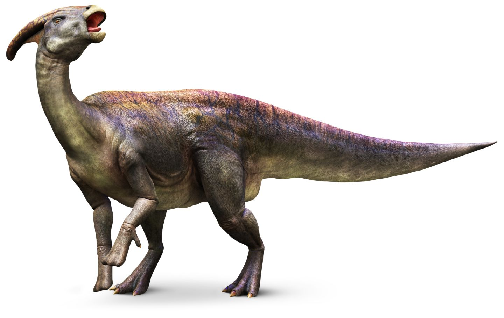

Parasaurolophus is a dinosaur that lived about 76 million years ago during the Late
Cretaceous Period. It was first discovered in 1922 in Alberta, Canada by
Dr. William A. Parks. He named it Parasaurolophus, a name which means “crested lizard”.
A name he gave the animal because of its prodigious bony crest that exists on top of its head.
Fossils of this dinosaur have not only been found in Canada, but has also been found in parts of
Utah and New Mexico.
This dinosaur is estimated to have been about 40 feet long, 8 feet
tall at the hips and weigh about 2 tons. The bony crest on top of its head is
believed to have grown as long as 6 feet long. Some scientists believe that air
could be pushed through this crest and that enabled this dinosaur to make low frequency sounds.
This means that it could use it like a wood wind instrument. In fact, the canals that exist inside of
it look very muchy like a European Crumhorn.
It is also believed that this dinosaur not only traveled on all four legs but
could also run on two legs when necessary. Parasaurolophus is believed to have been a
land based herbivore. This means that its diet probably consisted of ginkos, pine needles and leaves.
While the exact intelligence of this dinosaur can’t be accurately determined,
many scientist believe that it has an average intelligence among other dinosaurs for
its time. For example, it is believed that it wasn’t as smart as Carnosaurs, but that it wasn’t
as dumb as Stegosaurs. This dinosaur is also believed to have been a herd animal—much like buffalo are.